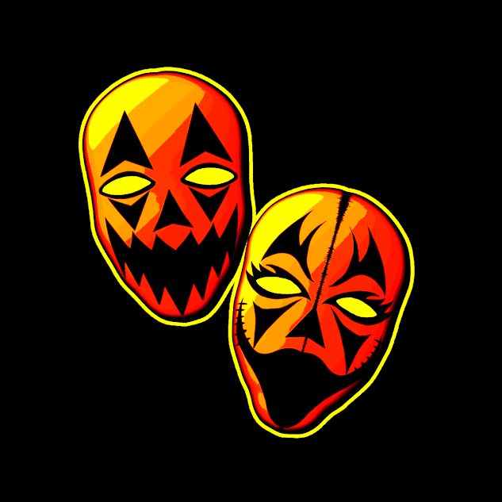

The Halloween Killaz is a horrorcore hip-hop rap group formed by Krack Hed near the end of 2024. At the start, the group had four members, Krack Hed, Stitch-Face Sam, Voodoo Bastard, and Hollow-Head. During the group's early days, Krack Hed was the only member consistently putting effort into projects. Krack Hed created the group's first album cover, featuring a jack-o'-lantern with high-contrast colors of black, yellow, and red. The cover was titled "Halloween Special", and it was intended to be the group's first album release. However, because Krack Hed was the only member actively contributing, the group slowly began to fall apart and eventually went quiet. The group remained inactive for almost a year until Krack Hed reached out to the other members about continuing the project. At that point, both Voodoo Bastard and Hollow-Head decided to leave the group. This left only Krack Hed and Stitch-Face Sam, reducing the lineup of the group to only two members. Today, Krack Hed and Stitch-Face Sam continue to keep the group alive. Both members contribute as much as they can, and their goal is to release new records every Halloween season and throughout the fall to keep the group alive...
Halloween Horror LP